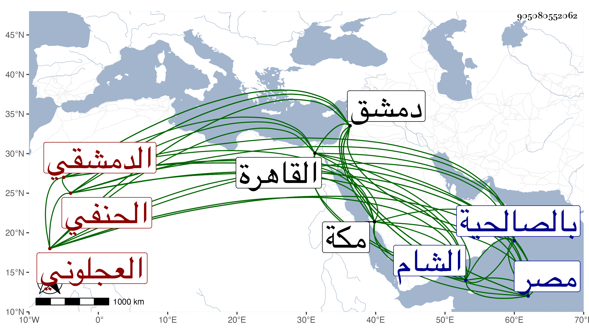

0902Sakhawi.DawLamic.ITO20230111-ara1.EIS1600.905080552062
Biography ID: 905080552062
759
موسى بن أحمد الشرف أبو البركات بن الشهاب العجلوني الأصل الدمشقي الحنفي ويعرف بابن عيد بكسر المهملة ثم تحتانية ساكنة بعدها دال مهملة . ولد بعد الثلاثين وثمانمائة تقريبا بدمشق ونشأ بها فحفظ القرآن وكتبا وأخذ الفقه عن القضاة الشمس الصفدي وحميد الدين النعماني والحسان بن بريطع وقوام الدين ويوسف الرومي وبعضهم في الأخذ عنه أكثر من بعض ولازم في أصول الفقه وغيره الأول وفي العقليات الثاني والثالث والأخيرين وكذا مولى شيخ البخاري ومما أخذه عنه شرحه لدرر البحار في الفقه وشرحه لنظم السراجية في الفرائض وأخذ في الكشاف قراءة وسماعا عن الجم النعماني ابن عم الماضي ولازم في المعاني والبيان حسينا الجزيري الشافعي وفي العربية العلاء القابوني وفي المنطق الشمس الكريمي حين قدم عليهم دمشق بل أنزله عنده وفي الفرائض أيضا مع الحساب الزين الشاغوري الشافعي صهره وفي شرح الشمسية عن مولى حاجي وفي الأحياء عن الشهاب الأقباعي وفي التصوف والقراءات عن الشمس الجرادقي الحنفي المعروف بالنحوي وفي التصوف وغيره عن الجمل يوسف المغربي الوانوغي وفي القراءات فقط الشمس بن النجار وفي التصوف وحده البلاطنسي في مختصره لمنهاج العابدين وسمع على العلاء بن بردس والونائي وغيرهما بل قرأ الصحيح على البرهان الباعوني وأكثر من الاشتغال جدا على طريقة جميلة من السداد والخير حتى برع وأشير إليه بالفضيلة ، وقدم الديار المصرية مرة بعد أخرى وأخذ عن الشمني والأقصرائي وابن الديري والزين قاسم والكافياجي وقرأ عليه مصنفه في كلمتي الشهادة وآخرين وأم بمقام الحنفية من الجامع بل وجلس فيه وفي غيره للتدريس ، وأفتى وناب في القضاء ثم حج في سنة أربع وسبعين وجاور التي تليها وحضر دروس عالم الحجاز البرهان بن ظهيرة وكتب له ، ورجع إلى بلده فأعرض عن النيابة بل والإفتاء خطا وعبته قاسم الدمشقي على ذلك لتقدمه عنده فيها فلم يلبث أن ولاه الأشرف قايتباي حين اجتيازه بالشام قضاءها الأكبر مسئولا فيه بعد العلاء بن قاضي عجلون وحمدت سيرته وصمم في كثير من القضايا مع استمراره على ملازمة الاشتغال والإشغال إلى أن انفصل عن قرب بالتاج ابن عربشاه لعدم انجراره في استبدال ما طلب منه ، وأقام بعد الانفصال على طريقه مقبلا على العلم والعبادة مع الإلحاح عليه من طلبته ونحوهم في الكتابة بالسؤال في العود فما وافق إلى أن استدعى به الأشرف أيضا بعد وفاة الأمشاطي فقدم عليه ومعه صهره الزين الشاغوري في أثناء ذي القعدة سنة خمس وثمانين فولاه القضاء وعظمه جدا وسكن بالصالحية النجمية واستناب كل من كان نائبا عن الذي قبله ثم زاد ونص وليم في سرعة تقلبه في ذلك وعدم تأنيه مما سببه غلبة سلامة باطنه المؤدية إلى الهوج بل كان موصوفا بالعقل ومزيد التودد المقتضي لمحبة الناس والرغبة في المذاكرة بالعلم وعلق عزل نوابه على ارتشائهم وبلغني أنه كان نوى أن يرتب لفقرائهم من معاليمه مع المحافظة على التلاوة ووظائف العبادة والاتصاف بحسن الشكالة والوقار واللحية النيرة وقصر القامة وقد سمعت الثناء عليه جدا من غير واحد م أهل بلده وأن البلاطنسي وخطابا كانا يرفعان من شأنه بل وكتب إلي وأنا بمكة بكثير من ذلك غير واحد من القاهرة مع فضيلته ومزاحمته المتوسطة ، ولأوصافه الجميلة وخيره أكرمه الله بسرعة الانفصال عن القضاء في البلدين ففي الشام بالعزل وأما هنا فإنه قبل استكمال شهرين من ولايته زلزلت الأرض وسقط عليه ساقط من أعلى حفة إيوان الحنابلة من الصالحية محل سكنه وذلك آخر يوم الأحد سابع عشر المحرم سنة ست فقضى غريبا شهيدا وتأسف الناس عليه كثيرا وشهد السلطان الصلاة عليه بسبيل المؤمني ودفنه بحوش تربته وكأن الزلزلة كانت لفقده رحمه الله وإيانا وقال الشهاب المنصوري :
| زلزلت مصر يوم مات بها | قاضي القضاة المهذب الحنفي |
| ما زال طول الحياة في شرف | حتى انقضى العمر منه بالشرف |
وأشار إلى ما قيل من سقوط شرافة عليه ، ومن نكته وقد قيل له حين طلب منه عود ابن داود أنه يكتب التاريخ قوله هو نفسه تاريخ .
